혼자 가는 여행 세번째 (20070723-27 남도여행) - 다섰째날 1
- 1 min read

전날 밤늦게까지 운전해서 너무 피곤했지만, 새벽 4시에 일어나 지리산에 오르기 시작했습니다.
지리산 노고단은 성삼재까지 차로 올라가고 걸어서 1시간 정도만 더 올라가면 됩니다. 차에 기름이 간당간당하는데, 이른 새벽에 문을 연 주유소가 없어 최대한 아끼면서 올라갔습니다. 간당간당하게 올라가서 성삼재 주차장에 주차하고, 걸어서 올라가기 시작했습니다. 올라오면서 여유를 부린 탓에 해가 뜨는 모습을 볼 수 없었습니다. 6시 반이 조금 넘었지만, 해는 이미 하늘 위로 솟아 올라왔습니다. 노고단에 올라서 저 멀리 보이는 천왕봉을 봤는데, 노고단에서 천왕봉을 볼 수 있는 날이 1년 중에 그리 많지 않다고 하던데, 이 날은 날씨가 무척이나 좋았습니다. 저 멀리 보이는 노고단 정상이 보이지만 한껏 여유를 부리면서 올라온 탓에 그만 저기까지 올라가지 못했습니다. 자연을 보호하려고 시간을 입산시간을 통제하고 있었는데, 새벽 4시 반 ~ 6시 반까지만 올라갈 수 있도록 하고 있었습니다. 6시 20분쯤 도착했지만 아저씨가 문앞에서 이제 문 닫을 시간이라고 안들여보내주네요. ㅜㅜ 대신 들어가지 못하는 사람들을 위해 한쪽에 모조 단이 만들어져 있는데, 정상에 못올라간 사람들은 이곳에서 쉬다 갈 수 있습니다.
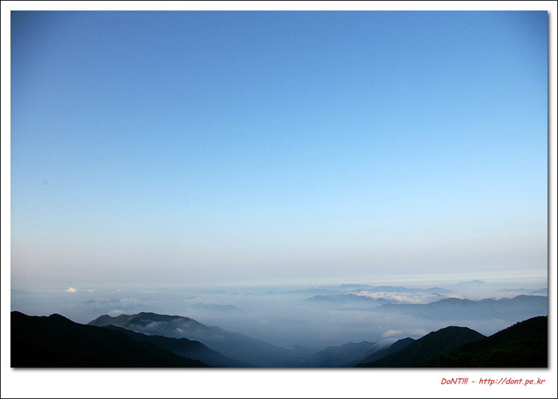
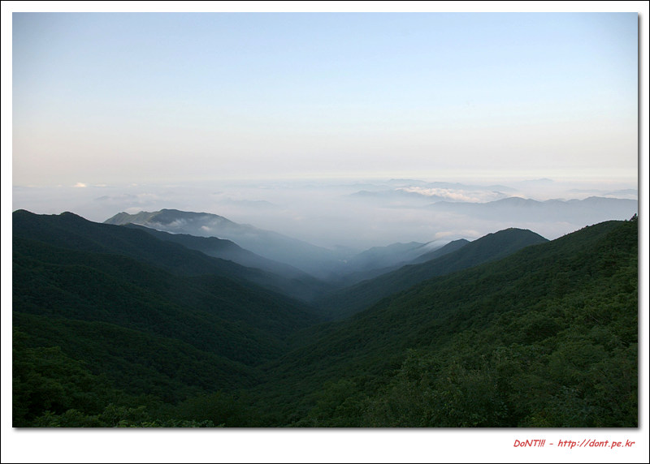
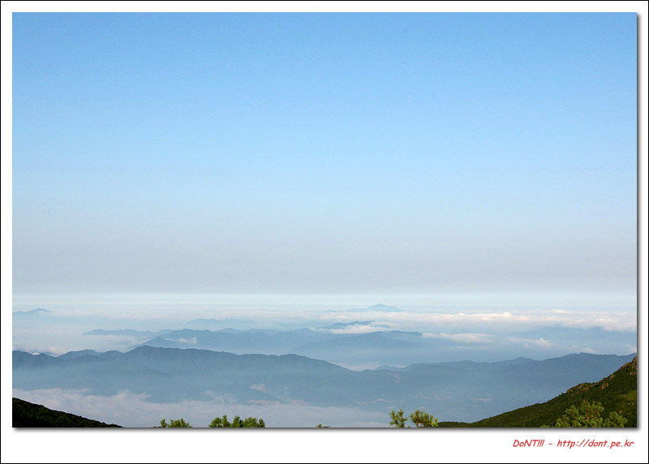
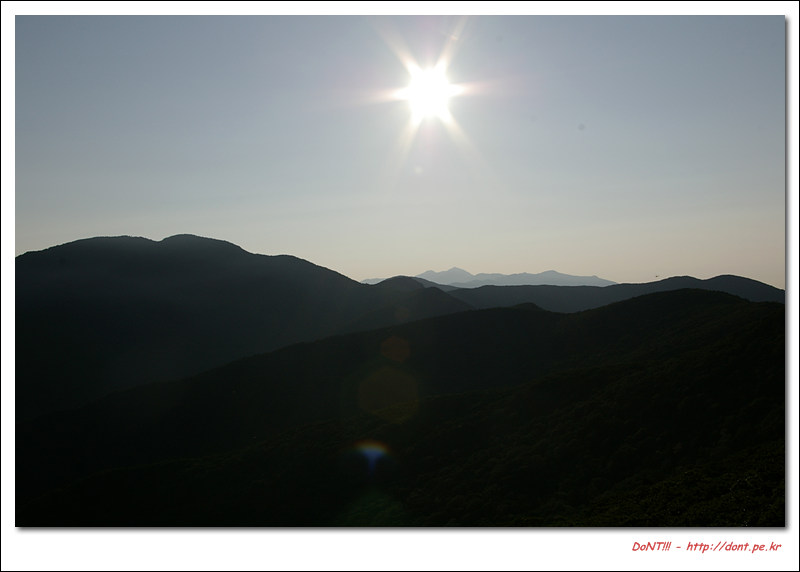
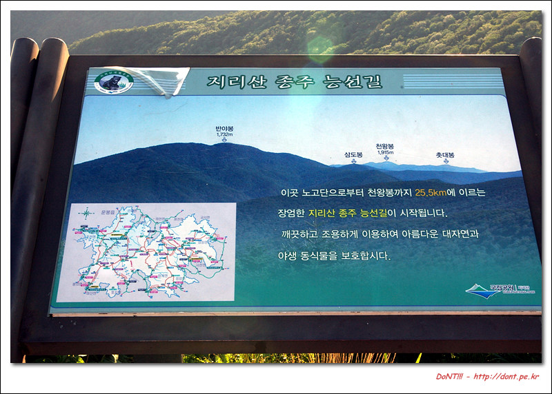
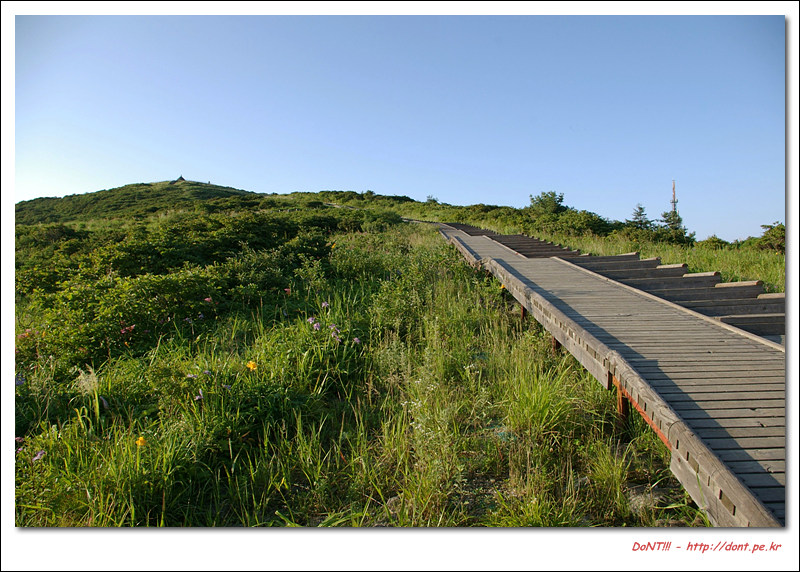
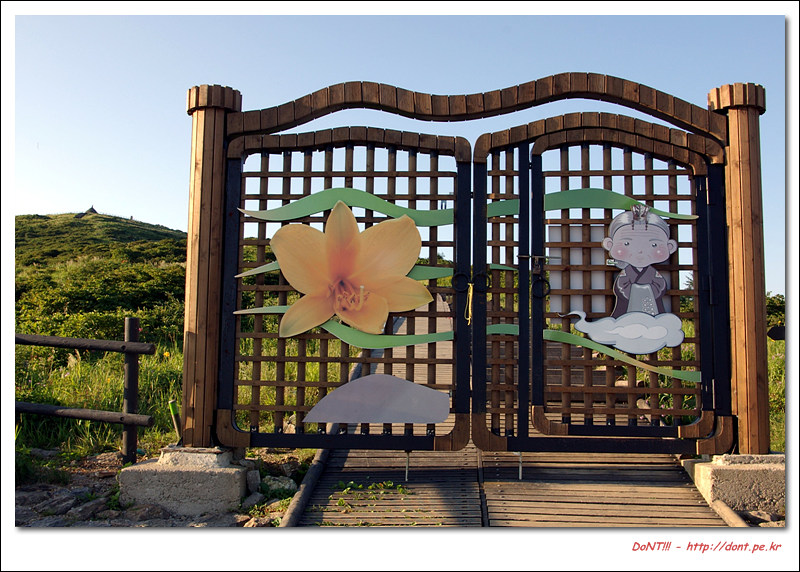
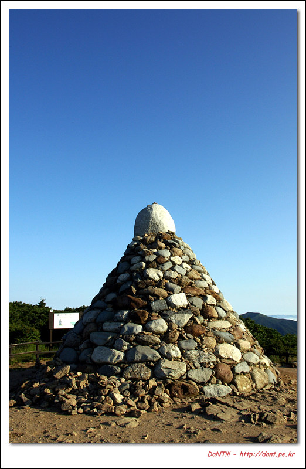
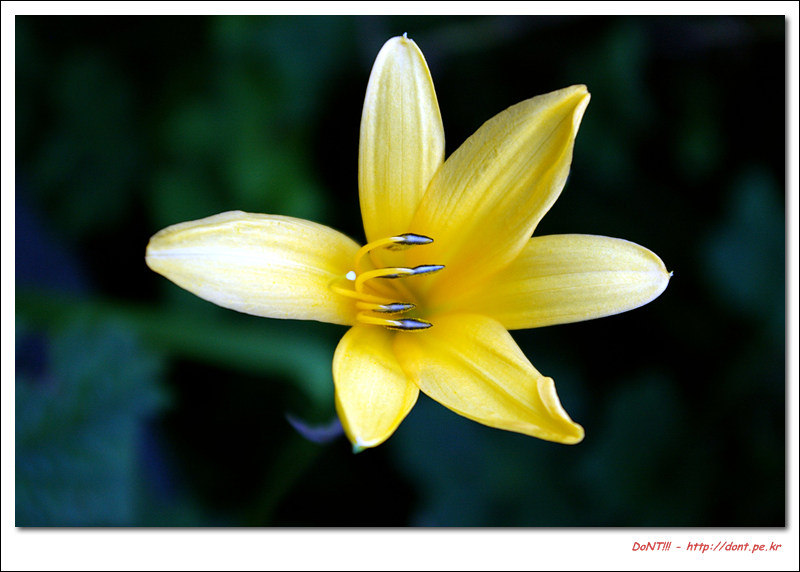
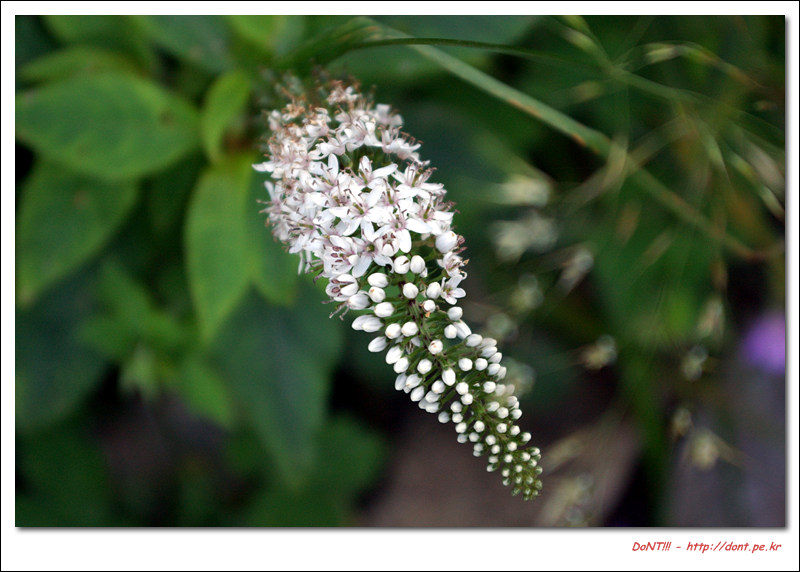
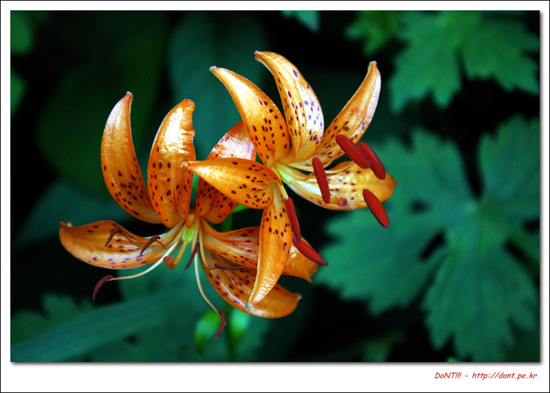
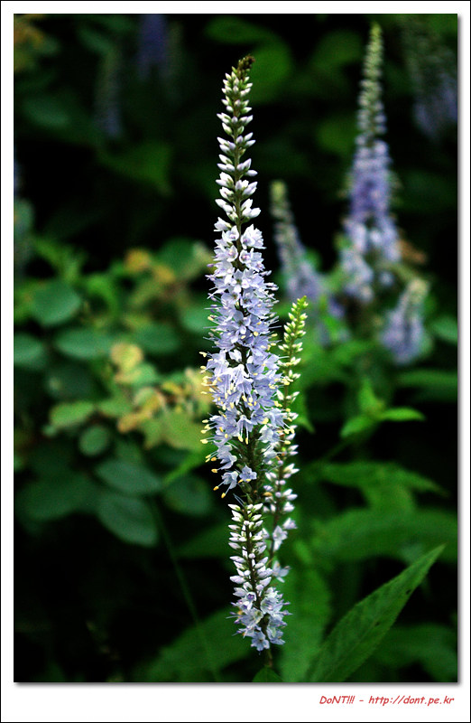
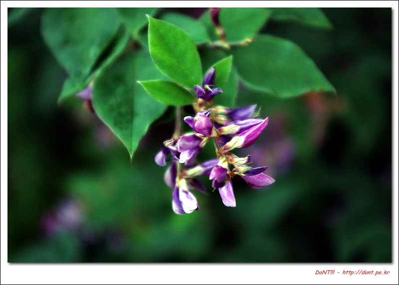
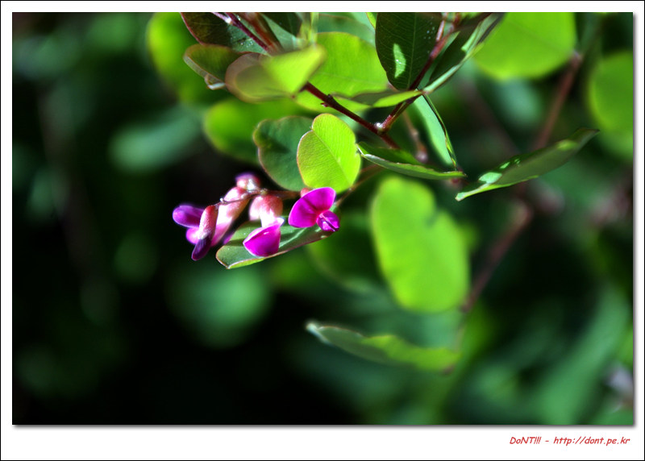
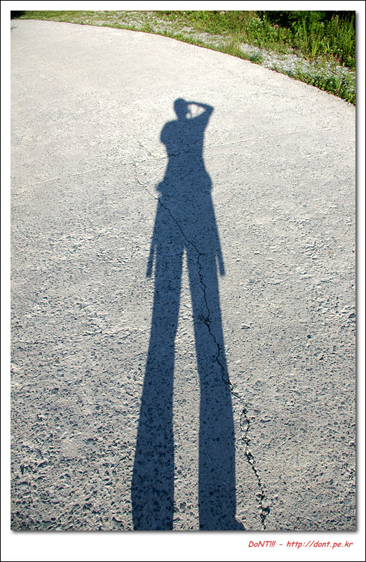
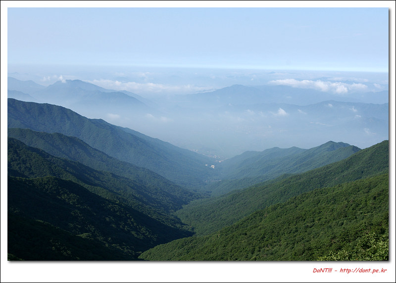